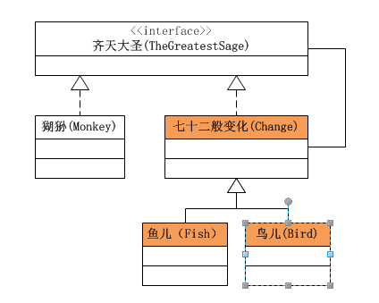
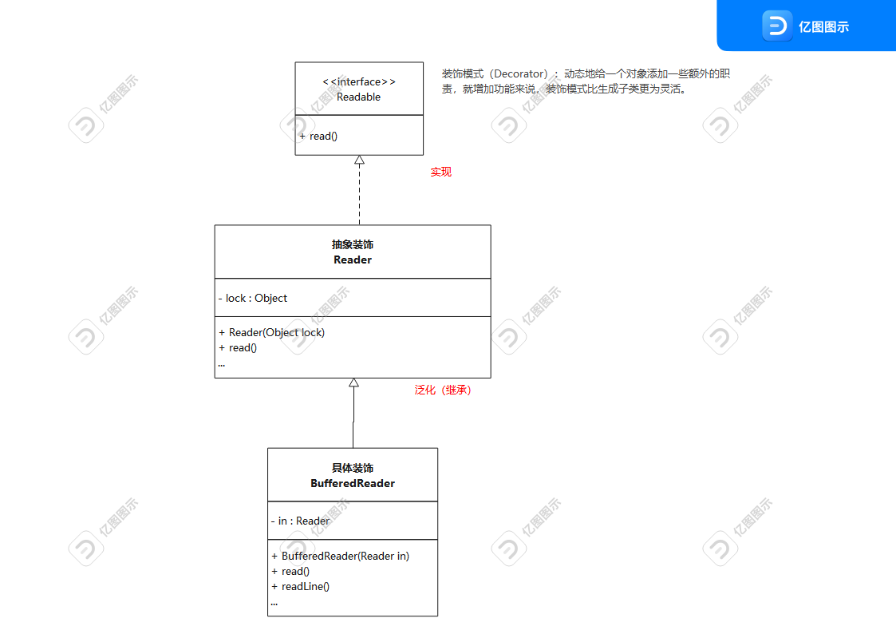

JAVA设计模式之装饰模式
装饰模式
装饰器模式是为了在不改变原有类的结构的前提下，给一个现有的对象拓展新的功能。这种类型的设计模式属于结构性模式，它作为现有类的一个包装。
这种模式为拓展类提供了新的解决方案，可以不使用继承的方式实现。
优点：
- 可以代替继承，减少子类的数量
- 动态增加功能，动态撤销
缺点：
- 多层装饰比较复杂
装饰模式的基本结构
装饰模式以对客户透明的方式动态地给一个对象附加上更多的责任。换言之，客户端并不会觉得对象在装饰前和装饰后有什么不同。装饰模式可以在不使用创造更多子类的情况下，将对象的功能加以扩展。
装饰模式类图如下：
装饰模式中的角色有：
- 抽象构件(Component) ： 给出一个抽象接口，以规范准备接收附加责任的对象。
- 具体构件(ConcreteComponent) : 定义一个将要接收附加责任的类。
- 装饰角色(Decerator) : 持有一个构件(Component)对象的实例，并定义一个与抽象构件接口一致的接口。
- 具体装饰(ConcreteDecorator)角色 : 负责给构件对象“贴上”附加的责任。
源代码：
抽象构件：
public interface Component {
public void sampleOperation();
}
具体构件 ：
public class ConcreteComponent implements Component {
@Override
public void sampleOperation() {
// 写相关的业务代码
}
}
装饰角色：
public class Decorator implements Component{
private Component component;
public Decorator(Component component){
this.component = component;
}
@Override
public void sampleOperation() {
// 委派给构件
component.sampleOperation();
}
}
具体装饰角色：
public class ConcreteDecoratorA extends Decorator {
public ConcreteDecoratorA(Component component) {
super(component);
}
@Override
public void sampleOperation() { super.sampleOperation();
// 写相关的业务代码
}
}
齐天大圣的例子
类图 ：
装饰模式是Java I/O的基本模式
由于Java I/O库需要很多性能的各种组合，如果这些性能都是用继承的方法实现的，那么每一种组合都需要一个类，这样就会造成大量性能重复的类出现。而如果采用装饰模式，那么类的数目就会大大减少，性能的重复也可以减至最少。因此装饰模式是Java I/O库的基本模式。
InputStream的对象结构图如下：

根据上图可以看出：
Component：由InputStream扮演。这是一个抽象类，为各种子类型提供统一的接口。
ConcreteComponent：由ByteArrayInputStream、FileInputStream、PipedInputStream、StringBufferInputStream等类扮演。它们实现了抽象构件角色所规定的接口。
Decorator：由FilterInputStream扮演。它实现了InputStream所规定的接口。
ConcreteDecorator：由几个类扮演，分别是BufferedInputStream、DataInputStream以及两个不常用到的类LineNumberInputStream、PushbackInputStream。
BufferedReader
类图：
在其设计中Readable是抽象构件，Reader则是一个装饰角色，BufferedReader是具体装饰角色，对Reader对象进行了包装。BufferedReader内定义了readLine、fill等方法，使用字符数组作为缓冲区，进而提高读入速度，同时提供了便捷的toString方法，可以直接返回字符串。
参考文章：
 wechat
wechat alipay
alipay